-
Testing the Functionalities of Facility Management features
13:22:26 PM / 02:15:628 Fail
Testing the Functionalities of Facility Management features
10.28.2023 13:22:26 10.28.2023 13:24:41 02:15:628 · #test-id=1FailABSAI190533 - FMS 1837_Facility Charge Collection JV_Wrong Debit Accounts_ABL_1014Given navigate to FMS application and login with valid credentialsstepdefinitions.HooksClass.addScreenshot(io.cucumber.java.Scenario)screenshot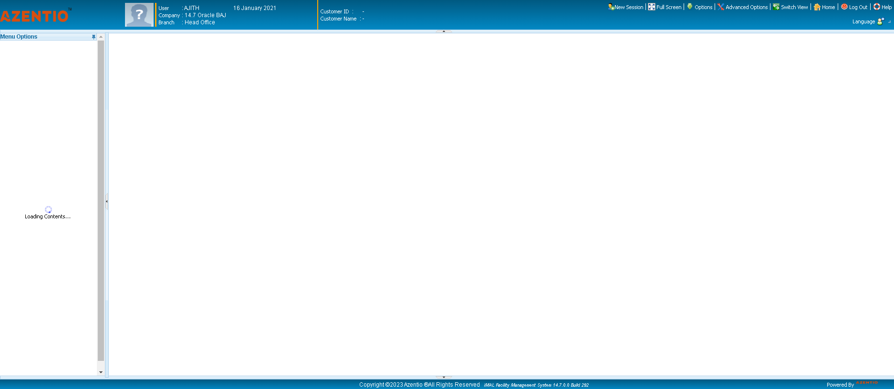And User_482 click Technical detailsstepdefinitions.HooksClass.addScreenshot(io.cucumber.java.Scenario)screenshot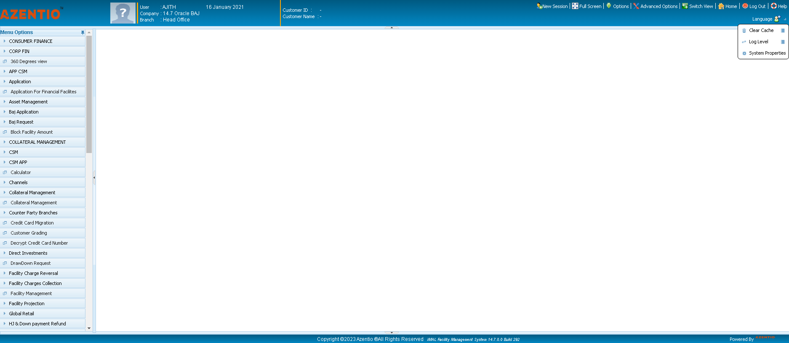And User_482 click clear cachesstepdefinitions.HooksClass.addScreenshot(io.cucumber.java.Scenario)screenshot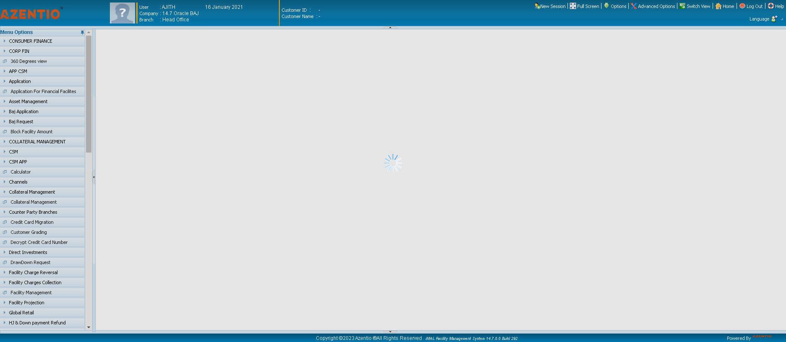And User_482 Click on Ok button in Success Pop up Menustepdefinitions.HooksClass.addScreenshot(io.cucumber.java.Scenario)screenshot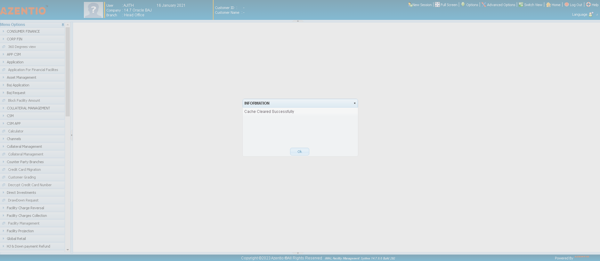And User_482 Click on WIFAK Application Main Menustepdefinitions.HooksClass.addScreenshot(io.cucumber.java.Scenario)screenshot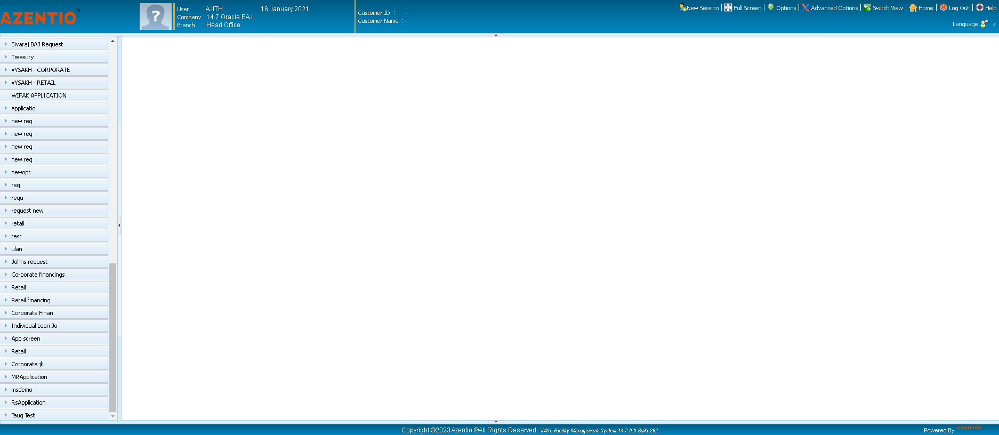And User_482 Click on WIFAK Application Sub Menustepdefinitions.HooksClass.addScreenshot(io.cucumber.java.Scenario)screenshot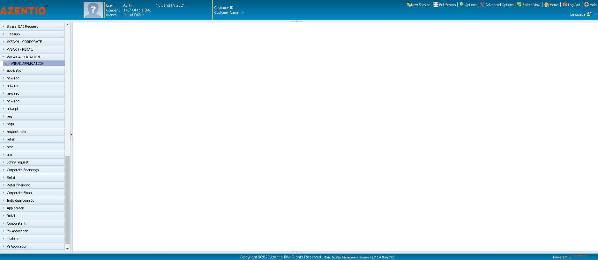And User_482 Click Application for financial facilitiesstepdefinitions.HooksClass.addScreenshot(io.cucumber.java.Scenario)screenshot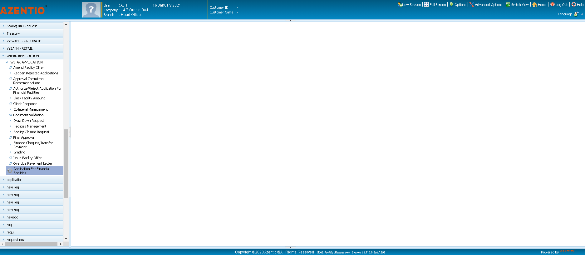And User_482 Click Maintenance screen in WIFAK Application sub menustepdefinitions.HooksClass.addScreenshot(io.cucumber.java.Scenario)screenshotAnd User_482 update test data set for AT_AFF_051stepdefinitions.HooksClass.addScreenshot(io.cucumber.java.Scenario)screenshot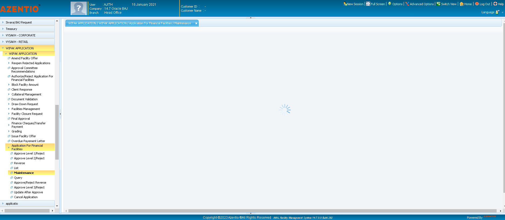And User_482 Select Application For field in Maintenace Screen under WIRAK Applicationstepdefinitions.HooksClass.addScreenshot(io.cucumber.java.Scenario)screenshot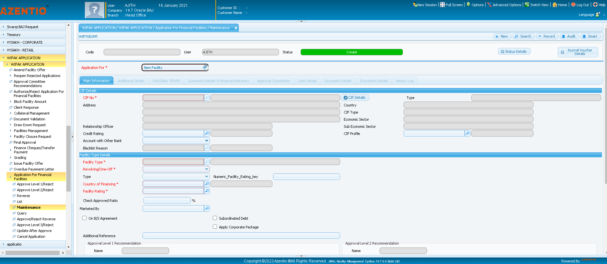And User_482 enter the CIF No in main info tab under WIRAK Applicationstepdefinitions.HooksClass.addScreenshot(io.cucumber.java.Scenario)screenshot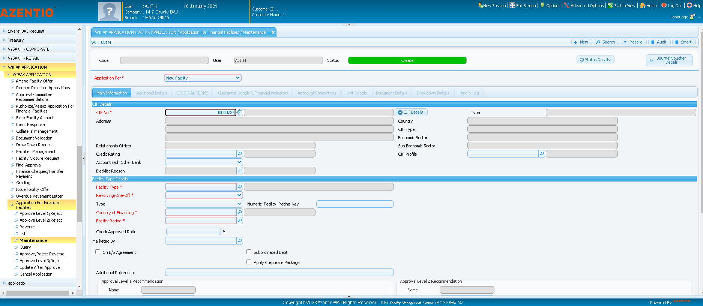And User_482 enter the facility type in main info tab under WIRAK Applicationstepdefinitions.HooksClass.addScreenshot(io.cucumber.java.Scenario)screenshot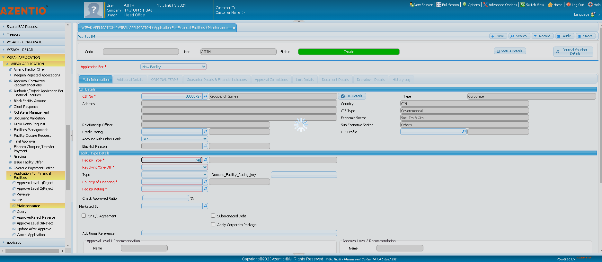And User_482 enter the country of financing in main info tab under WIRAK Applicationstepdefinitions.HooksClass.addScreenshot(io.cucumber.java.Scenario)screenshotAnd User_482 enter facility rating in main info tab under WIRAK Applicationstepdefinitions.HooksClass.addScreenshot(io.cucumber.java.Scenario)screenshot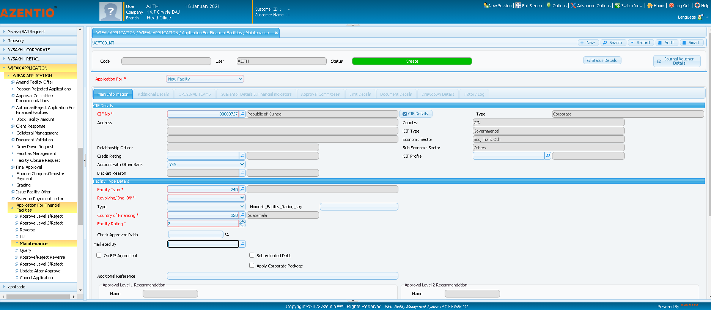And User_482 clicks on the additional details tab under WIRAK Applicationstepdefinitions.HooksClass.addScreenshot(io.cucumber.java.Scenario)screenshot And User_482 Enter total value under additional details tab in WIFAK Applicationstepdefinitions.HooksClass.addScreenshot(io.cucumber.java.Scenario)screenshot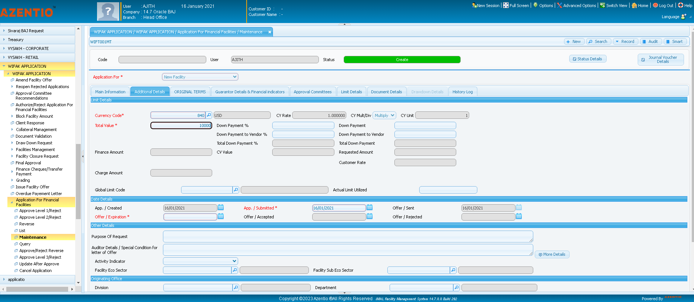And User_482 Enter offer Expiration in Additional details under WIFAK Applicationstepdefinitions.HooksClass.addScreenshot(io.cucumber.java.Scenario)screenshot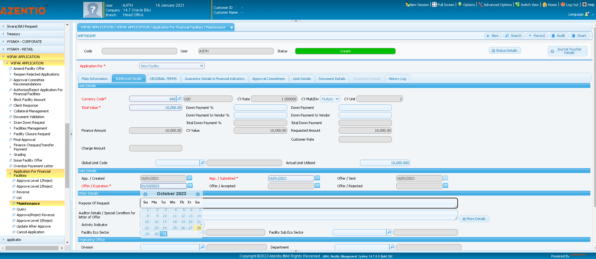And User_482 click Limit Details tab in WIFAK Applicationstepdefinitions.HooksClass.addScreenshot(io.cucumber.java.Scenario)screenshot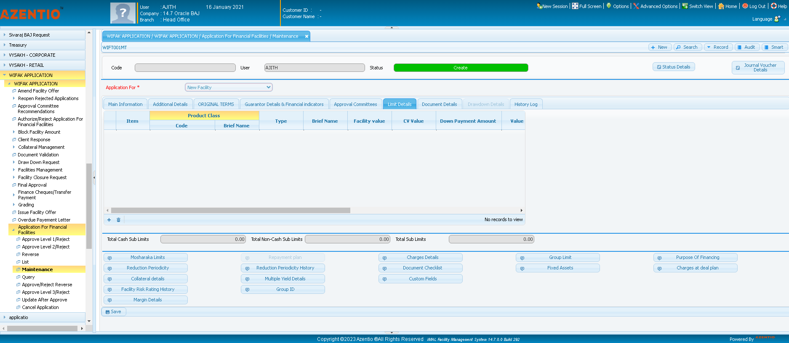And User_482 click add icon in limit details under WIFAK Applicationstepdefinitions.HooksClass.addScreenshot(io.cucumber.java.Scenario)screenshot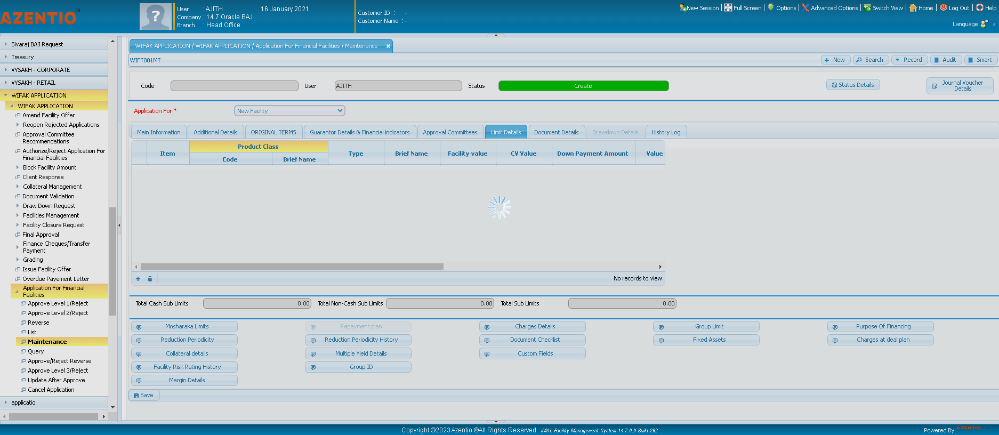And User_482 select the product class in limit details under WIFAK Applicationstepdefinitions.HooksClass.addScreenshot(io.cucumber.java.Scenario)screenshot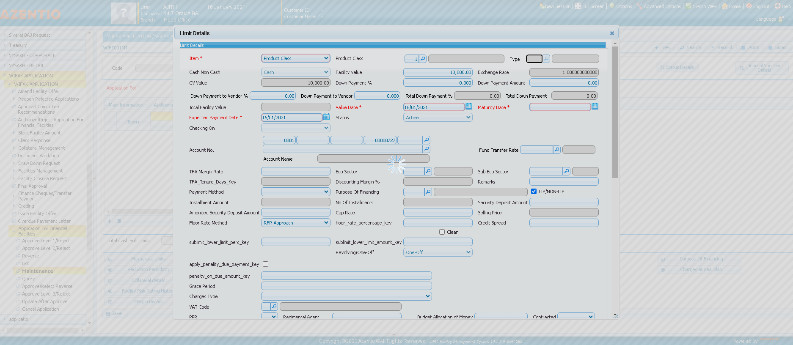And User_482 click on the Account No feild under limit detailsstepdefinitions.HooksClass.addScreenshot(io.cucumber.java.Scenario)screenshot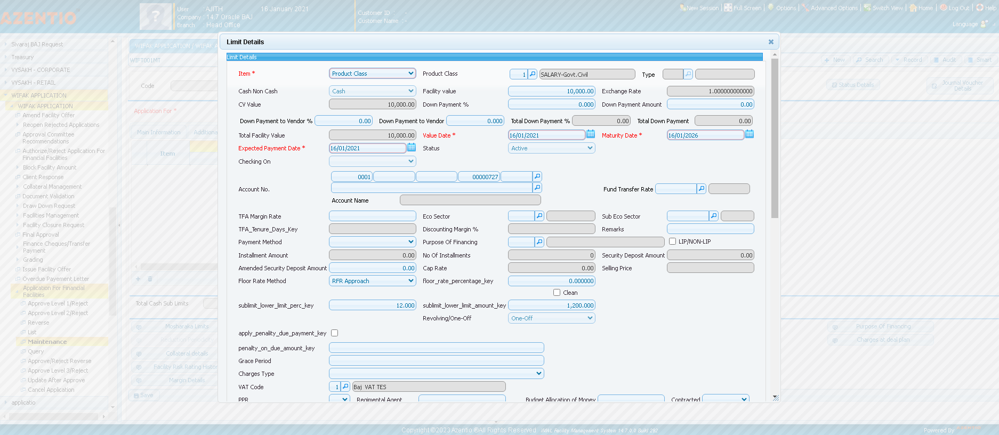And User_482 enter the Account feild under limit detailsstepdefinitions.HooksClass.addScreenshot(io.cucumber.java.Scenario)screenshot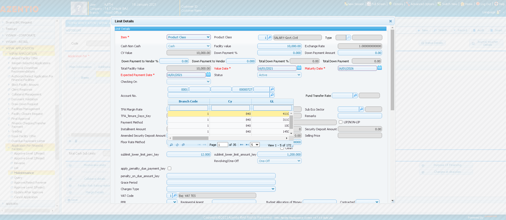And User_482 check clean checkbox options in limit details under WIFAK Applicationstepdefinitions.HooksClass.addScreenshot(io.cucumber.java.Scenario)screenshot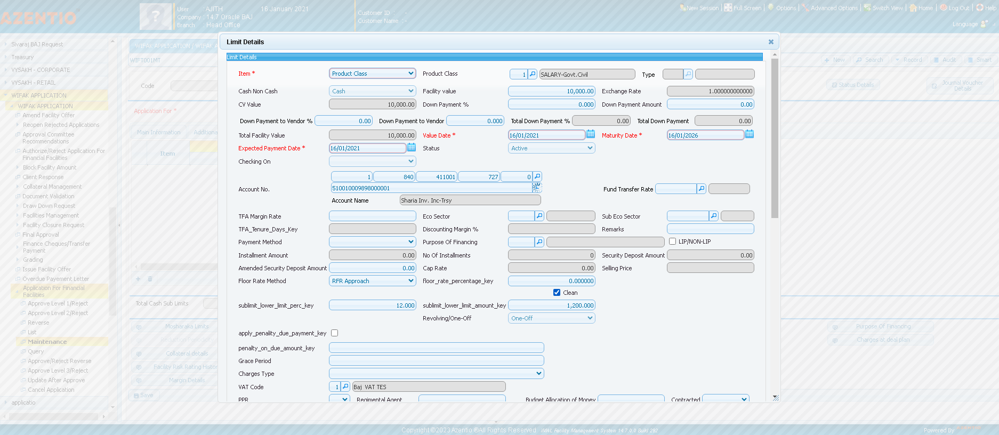And User_482 click add icon in limit details popup under WIFAK Applicationstepdefinitions.HooksClass.addScreenshot(io.cucumber.java.Scenario)screenshot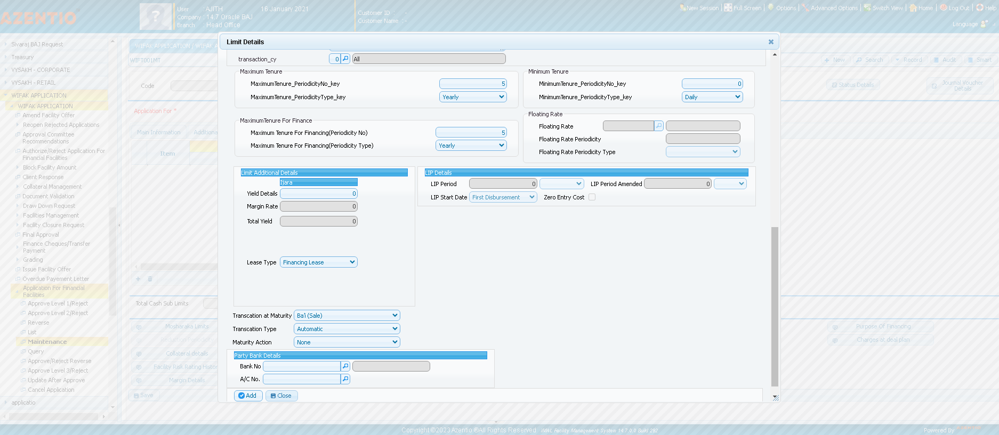And User_482 click on the Charge Detail tabstepdefinitions.HooksClass.addScreenshot(io.cucumber.java.Scenario)screenshot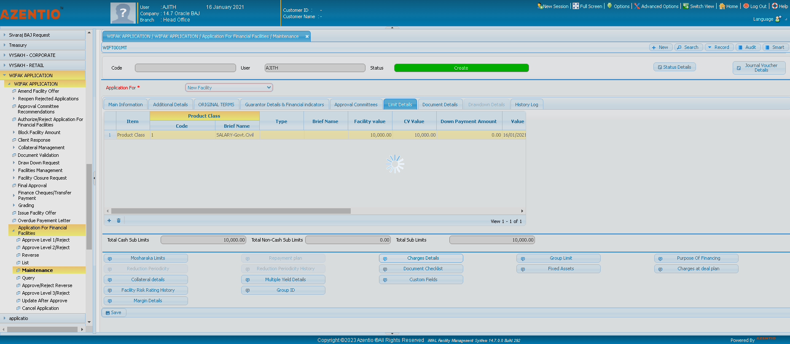And User_482 click on the Rec under charge detailsstepdefinitions.HooksClass.addScreenshot(io.cucumber.java.Scenario)screenshot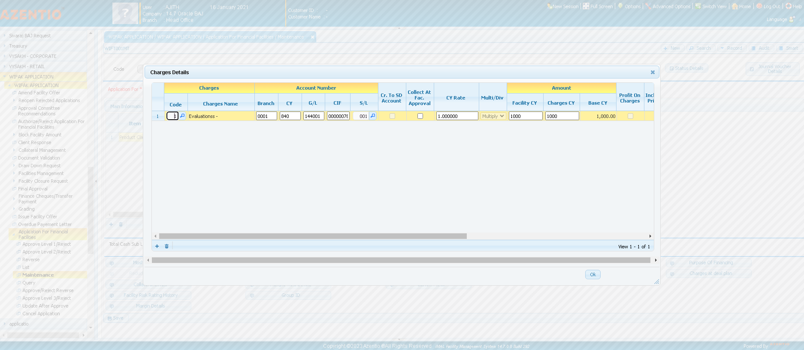And User_482 Check the Collect at FAC Approval flagstepdefinitions.HooksClass.addScreenshot(io.cucumber.java.Scenario)screenshot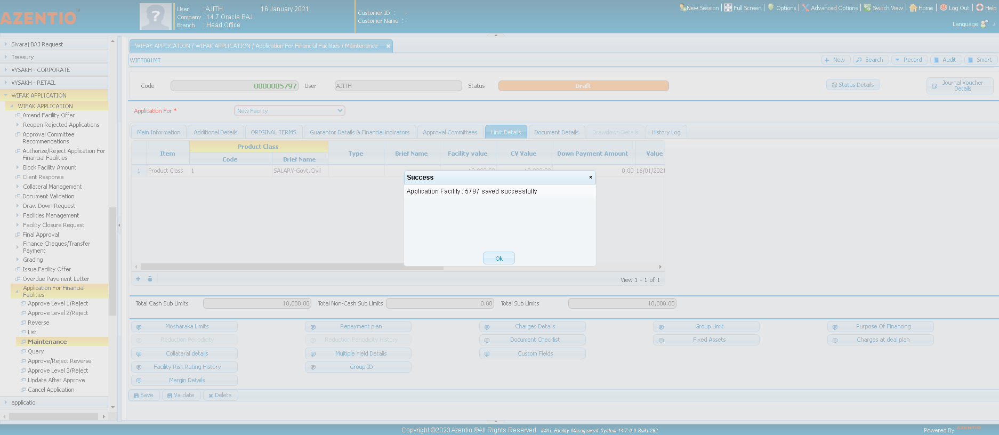And User_482 Check on the Allow Modify TFA Charge flagStep skippedAnd User_482 click on the ok btn under Charge detailsStep skippedAnd User_482 click on the facilty maintenance screenStep skippedAnd User_482 click on the maintenance under facilty maintenance screenStep skippedAnd User_482 click on the search button under facilty maintenance screenStep skippedAnd User_482 click on the application reference under search feildStep skippedAnd User_482 enter the facilty codeStep skippedAnd User_482 double click on the retrived rec under facility managment screenStep skippedAnd User_482 click on the general voucher detailStep skippedAnd User_482 validate the deatils are showing correctlyStep skipped
And User_482 Enter total value under additional details tab in WIFAK Applicationstepdefinitions.HooksClass.addScreenshot(io.cucumber.java.Scenario)screenshot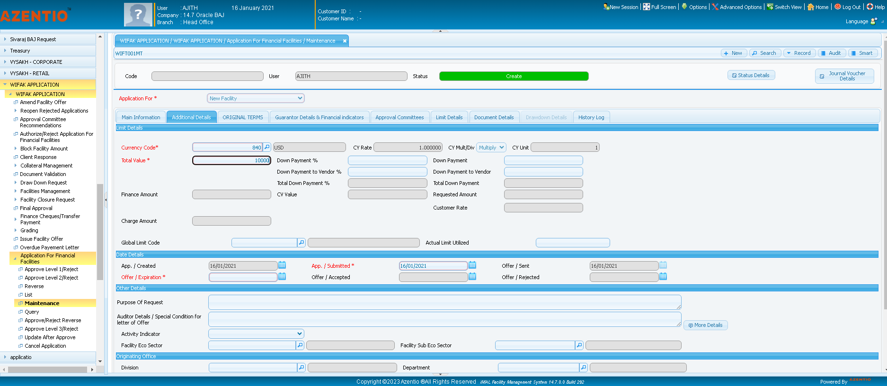And User_482 Enter offer Expiration in Additional details under WIFAK Applicationstepdefinitions.HooksClass.addScreenshot(io.cucumber.java.Scenario)screenshot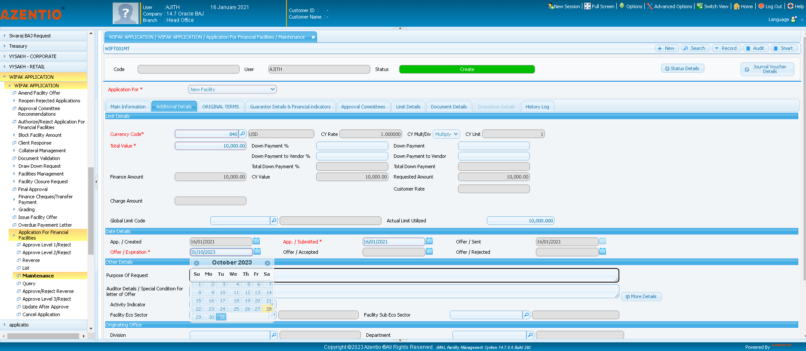And User_482 click Limit Details tab in WIFAK Applicationstepdefinitions.HooksClass.addScreenshot(io.cucumber.java.Scenario)screenshot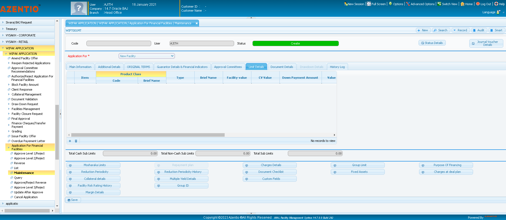And User_482 click add icon in limit details under WIFAK Applicationstepdefinitions.HooksClass.addScreenshot(io.cucumber.java.Scenario)screenshot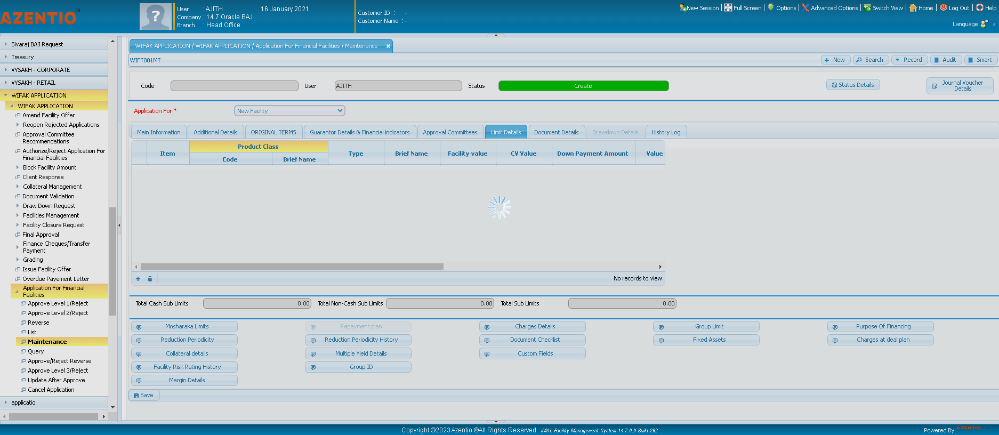And User_482 select the product class in limit details under WIFAK Applicationstepdefinitions.HooksClass.addScreenshot(io.cucumber.java.Scenario)screenshot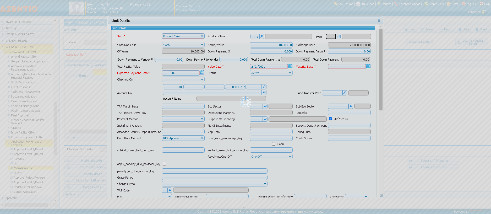And User_482 click on the Account No feild under limit detailsstepdefinitions.HooksClass.addScreenshot(io.cucumber.java.Scenario)screenshot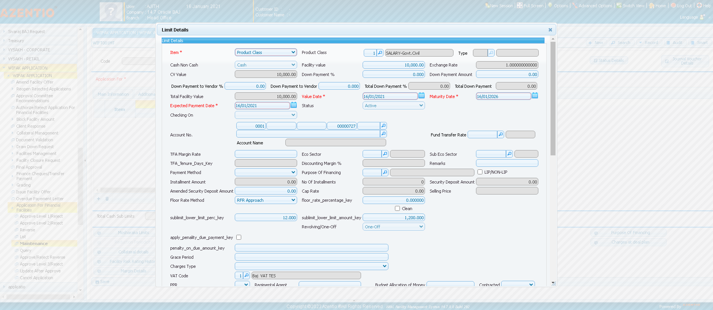And User_482 enter the Account feild under limit detailsstepdefinitions.HooksClass.addScreenshot(io.cucumber.java.Scenario)screenshot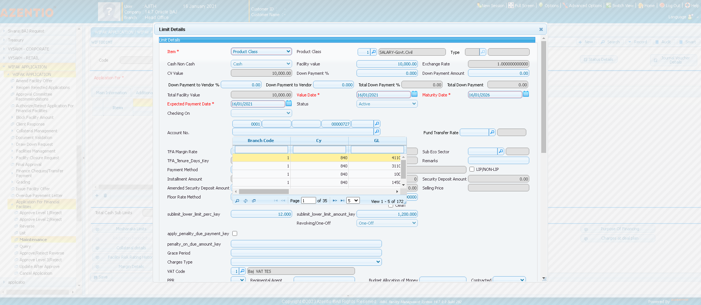And User_482 check clean checkbox options in limit details under WIFAK Applicationstepdefinitions.HooksClass.addScreenshot(io.cucumber.java.Scenario)screenshot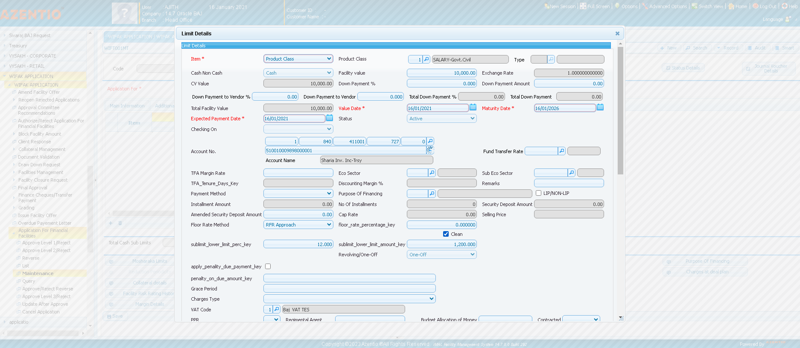And User_482 click add icon in limit details popup under WIFAK Applicationstepdefinitions.HooksClass.addScreenshot(io.cucumber.java.Scenario)screenshot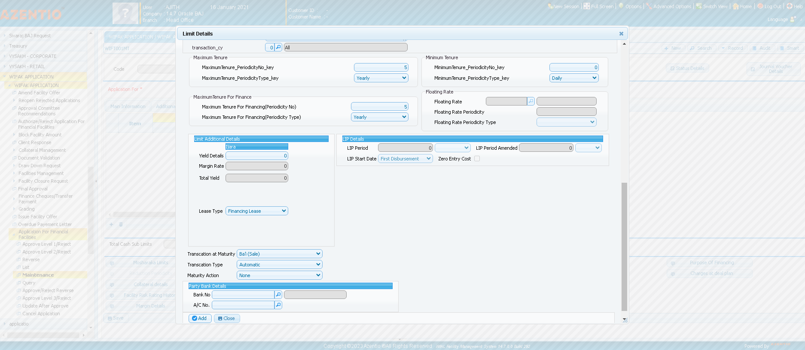And User_482 click on the Charge Detail tabstepdefinitions.HooksClass.addScreenshot(io.cucumber.java.Scenario)screenshot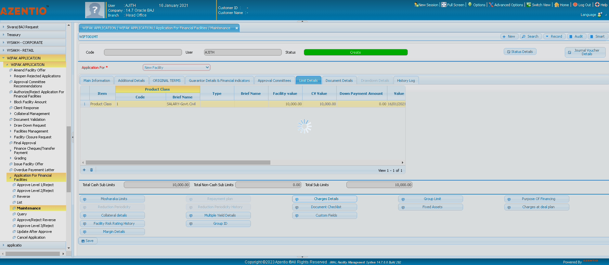And User_482 click on the Rec under charge detailsstepdefinitions.HooksClass.addScreenshot(io.cucumber.java.Scenario)screenshot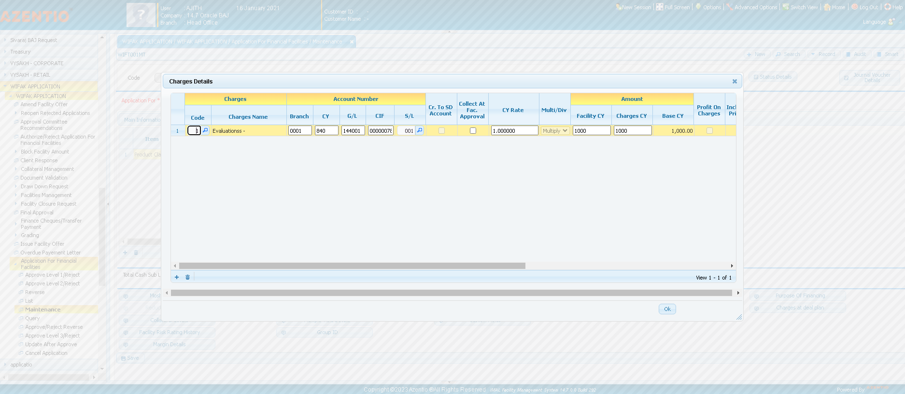And User_482 Check the Collect at FAC Approval flagstepdefinitions.HooksClass.addScreenshot(io.cucumber.java.Scenario)screenshot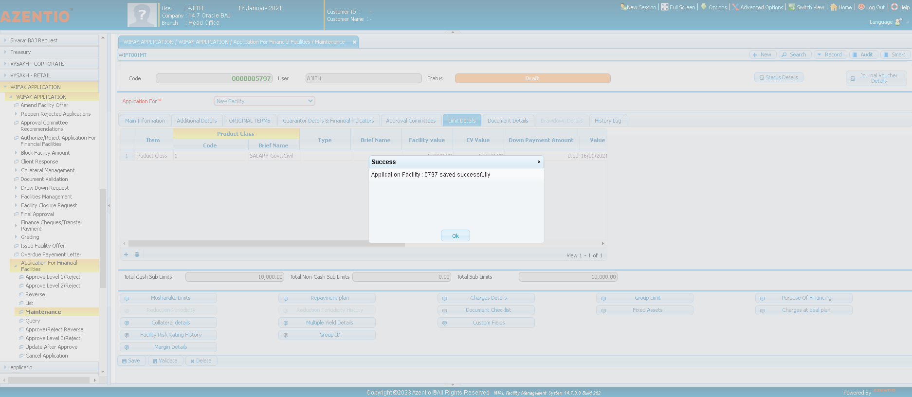And User_482 Check on the Allow Modify TFA Charge flagStep skippedAnd User_482 click on the ok btn under Charge detailsStep skippedAnd User_482 click on the facilty maintenance screenStep skippedAnd User_482 click on the maintenance under facilty maintenance screenStep skippedAnd User_482 click on the search button under facilty maintenance screenStep skippedAnd User_482 click on the application reference under search feildStep skippedAnd User_482 enter the facilty codeStep skippedAnd User_482 double click on the retrived rec under facility managment screenStep skippedAnd User_482 click on the general voucher detailStep skippedAnd User_482 validate the deatils are showing correctlyStep skipped
Started
Oct 28, 2023 01:22:24 PM
Ended
Oct 28, 2023 01:24:41 PM
Features Passed
0
Features Failed
1
Features
Scenarios
Steps
Timeline
Tags
| Name | Passed | Failed | Skipped | Others | Passed % |
|---|---|---|---|---|---|
| @AT_FM_002 | 0 | 1 | 0 | 0 | 0% |
System/Environment
| Name | Value |
|---|---|
| version | 10 |
| os | windows |
-
@AT_FM_002
1 tests
@AT_FM_002
1 failedStatus Timestamp TestName Fail 13:22:26 PM ABSAI190533 - FMS 1837_Facility Charge Collection JV_Wrong Debit Accounts_ABL_1014 Testing the Functionalities of Facility Management features.ABSAI190533 - FMS 1837_Facility Charge Collection JV_Wrong Debit Accounts_ABL_1014
-
org.openqa.selenium.TimeoutException
1 tests
org.openqa.selenium.TimeoutException
1 failedStatus Timestamp TestName Fail 13:23:41 PM And User_482 Check the Collect at FAC Approval flag Testing the Functionalities of Facility Management features.ABSAI190533 - FMS 1837_Facility Charge Collection JV_Wrong Debit Accounts_ABL_1014.And User_482 Check the Collect at FAC Approval flag